2 Creating Environments with Python
On HSMA, we generally recommend the use of Anaconda (or a sub-distribution like Miniconda or Miniforge).
However, we also recognise that some people can’t use Anaconda due to IT restrictions.
If you are just using pure Python, then you will need to use a different method to set up the virtual environments required for the course.
One key downside of this approach is that we are unable to freely install any version of Python
2.1 Creating Environments Using VSCode
Unlike when we create environments using Anaconda - where all of our environments will, by default, go into a central location with the other environments we have created, this method will instead create an environment in the same location as the code files you will be working on.
2.1.1 Setting an environment up using a requirements.txt file
In HSMA, we will be using one environment per module.
For example, the environment used for module 2 (discrete event simulation) will be used for all three of those sessions, but will then be different to the environment used for module 3 (geographic modelling).
Why does this matter? When using the approach in this chapter to creating an environment, you will want to structure your folders in such a way that allows you to create and reuse that environment for the whole module, rather than creating the environment anew for each session (or trying to navigate to that environment from a different location, which can be somewhat clunky).
In practice, what this means is you will want a top-level folder called something like ‘HSMA’, with a subfolder per module, like this:
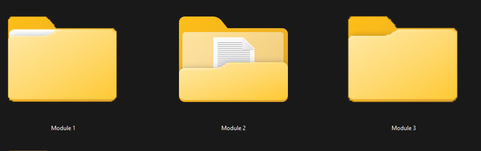
Within this subfolder you will need to download and unzip the module folders from the HSMA Github

In this folder, you will then want to put the requirements.txt file for the module.
An environment will contain a specific combination of packages; each module uses a specific set of packages together, and you will be provided with a type of file (a requirements.txt file) that allows you to install all of the required packages in one go.
requirements.txt is effectively the equivalent of conda’s environment.yml file.
It just lists the packages - and optionally, the versions of these packages - that need to be installed into the environment.
The contents of a requirements.txt file might look a bit like this:
numpy==1.25.2
pandas==2.0.3
simpy==4.0.2This will just tell VSCode to install numpy v1.25.2, pandas v2.0.3, and simpy v4.0.2 from the internet.
Any additional packages these packages themselves rely on behind the scenes will automatically be downloaded as well.
It’s important that your requirements.txt file goes directly inside your module folder - otherwise it may not be picked up in a later step, meaning your environment won’t contain these specified packages.
This means your module subfolder may look something like this.

All requirements.txt files can be downloaded from the HSMA Github.
Follow this link
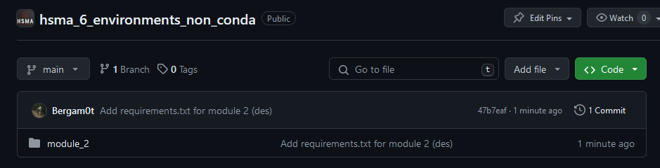
Click into the relevant module folder and then the requirements.txt file.
You can then download this file by clicking ‘download raw file’.
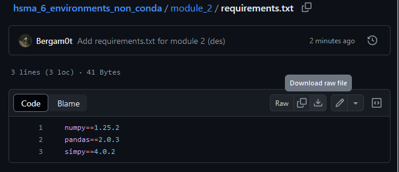
Then save this file to the relevant module’s folder on your computer.
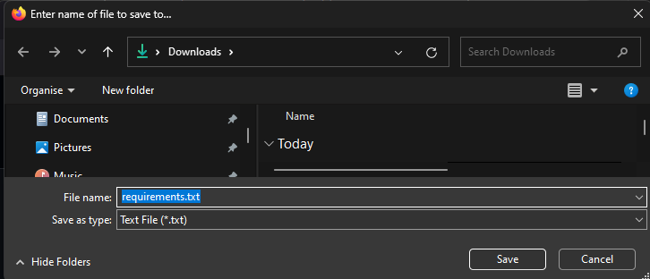
2.1.1.1 Opening a module folder in VSCode
You will want to open up the entire module folder in VSCode for the next step.
From within VSCode, choose File –> Open Folder.

Navigate to the folder where you have your HSMA exercises stored.

Click on the relevant module subfolder, but don’t enter it (i.e. don’t double click!). It should just be highlighted, then click on the ‘Select Folder’ button in the bottom right.
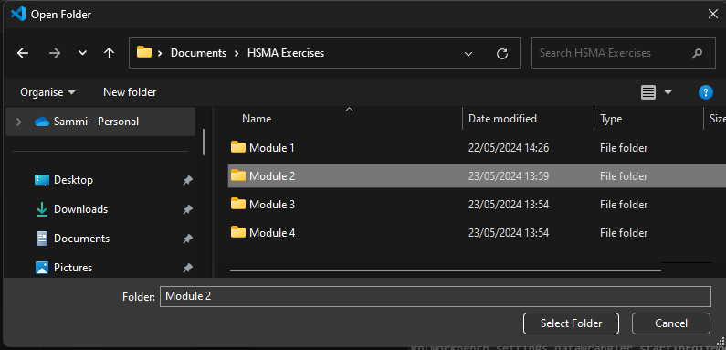
Your explorer window will then look something like this.
You may need to click on the explorer icon - which looks like two pieces of paper on top of each other and is the first icon in the list on the left of your screen - to make this panel appear.

2.1.1.2 Creating the environment
Press CTRL + SHIFT + P to bring up the command pallette.
Choose Python: Create a Virtual Environment. If this does not appear in the initial list, you may need to start typing ‘virtual’ to filter the list of available commands until Python: Create a Virtual Environment shows up.
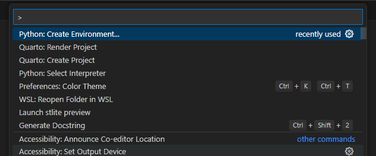
Next, select Venv.

Choose a version of Python - you may only have one available.
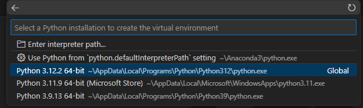
If you put the requirements.txt file in the location specified above, you will then get this option:
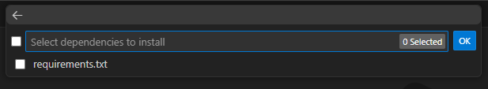
Click the tickbox next to it to indicate you do want the packages mentioned in requirements.txt to be installed, then click ‘Ok’.
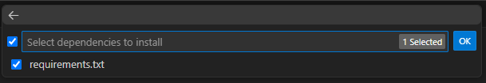
Finally, wait for the environment to be created. This may take 1-15 minutes depending on the speed of your internet connection and how many packages are being installed.

At the end, you will see a prompt appear along these lines.
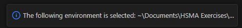
If you now create a new terminal, you should see that the prompt now begins with (.venv), indicating that the environment is selected.
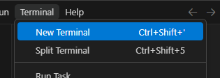
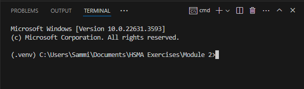
There are a few reasons why this might not appear.
You may need to open a new terminal.
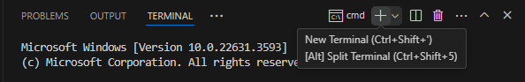
If your default terminal is a powershell terminal, try opening a cmd terminal instead.
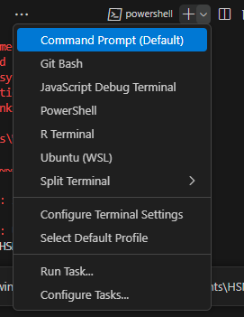
Otherwise you may need to close and reopen vscode, making sure you reopen the same folder again if it does not load automatically.
When you then try to run code in the interactive terminal, you can see in the top-right corner that the .venv we have created has been automatically selected.
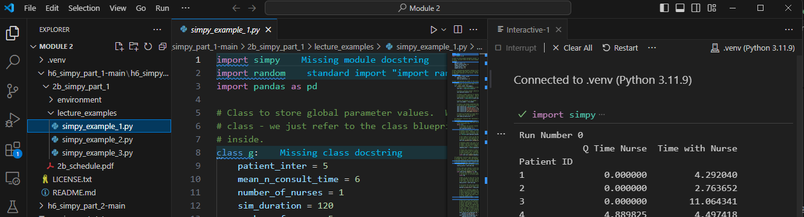
The first time you try to run code in the interactive terminal or a Jupyter notebook, you will be asked to install the ipynotebook package. Click ‘install’ and wait until the install finished. You should only have to do this once for each new environment you create.
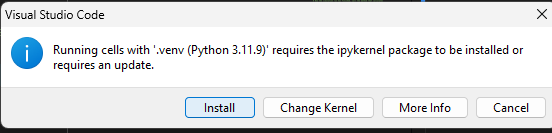
2.2 Setting Environments up Manually (without a requirements.txt)
If you do not have a requirement.txt file, you can still create a virtual environment.
Follow the steps above to open the folder you want the environment to be created in within VSCode, and then follow the steps through.
After the choice to create a venv and you have selected a version of Python, you will not be provided with this option.
Instead, the environment will just be created, containing no additional packages.
Within the terminal, first check to see that the command prompt begins with (.venv).
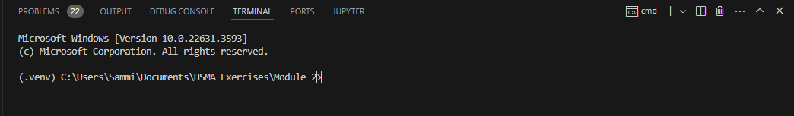
You can then run the following command to install a new package.
Here, we are telling it to install the most recent version of the matplotlib graphing package with the code pip install matplotlib.

Depending on how Python has been set up on your machine, this command prompt may not be able to find the pip package mangager with the command.
If you receive an error message when trying to run pip install matplotlib, try
python -m pip install matplotlib
instead.
2.3 Creating a requirements.txt file from an environment.yml file
An environment.yml file contains additional details that the Anaconda package manager requires.
However, you may be able to create a new blank .txt file in a program like Notepad and build the requirements.txt from the environment.yml.
For example, this is the environment.yml file from module 2 of HSMA.
name: des
channels:
- defaults
dependencies:
- python=3.11.4
- ipykernel
- pip:
- simpy==4.0.2
- numpy==1.25.2
- pandas==2.0.3
prefix: C:\Users\dan\anaconda3\envs\desThe equivalent requirements.txt file is just the packages from the pip section.
simpy==4.0.2
numpy==1.25.2
pandas==2.0.3In the HSMA programme, all of our environment.yml files point towards the pip installer rather than conda.
However, in environment.yml files found elsewhere, you may need to look at what
2.4 Dealing with dependency issues
As mentioned at the beginning of the section, unlike when we create an environment using Anaconda, we cannot easily download a specific version of Python as part of the process when using this method. Instead, we can only choose from the versions of Python we have available on our machine. For some packages, this may cause issues preventing the install from proceeding.
One option is to change or remove the version numbers from the requirements.txt file.
For example, this original file
simpy==4.0.2
numpy==1.25.2
pandas==2.0.3would become
simpy>=4.0.2
numpy>=1.25.2
pandas>=2.0.3This gives pip more flexibility to install newer versions of the packages that may be compatible with the version of Python you are using.
Different versions of packages may remove or significantly change functions that certain code examples rely on, so this should be avoided where possible.
2.5 Alternative Approaches
While we have used the venv capabilities built in to VSCode here, it is possible to use venv entirely separately from VSCode.
You could also choose a central folder where you save all of your environments.